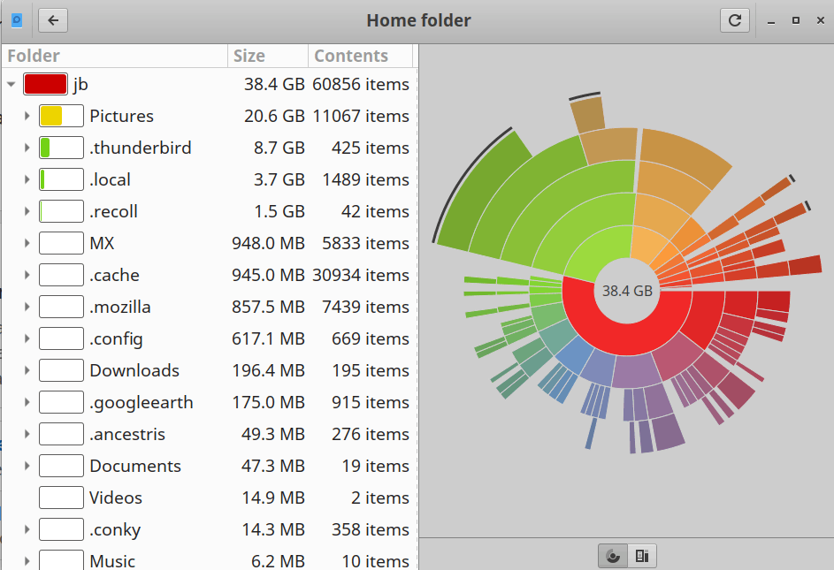

This application offers several easy actions to check and increase hard drive space.
Baobab (Disk Usage Analyzer) gives a very nice graphical display of your used space
Note that there are other cleanup applications available in the repos such as Bleachbit, but these have a significant potential to destroy an OS and should only be used by advanced users.